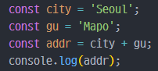
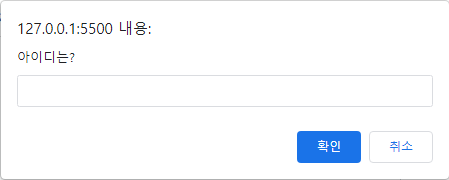

Javascript Quiz
Q1. 다음 중 js 파일을 불러오는 방법으로 옳은 것은?
<script src="xxx.js"><script name="xxx.js"><script href="xxx.js">
Q2. 어떤 HTML 요소 안에 자바스크립트 문법을 작성해야 하는가?
<js><scripting><javascript><script>
Q3. 자바스크립트를 삽입하는 올바른 위치는?
-
<head>와 <body> 모두 가능
<head><body>
Q4. 자바스크립트 주석으로 올바른 것을 모두 고르시오.
//<!-- -->#/* */
Q5. 자바스크립트 관례에 따른 올바른 변수명은 무엇인가?
- hello_world
- hello-world
- helloWorld
- HelloWorld
Q6. 다음 중 변수를 올바르게 선언한 것은?
v userId;const userId;let userId;string userId;
Q7. boolean 변수를 선언하는 방식으로 옳은 것은?
let isWater = True;let isWater = true;let isWater = 'True';let isWater = 'true';
Q8. 다음 중 변수에 값을 할당하는 연산자는?
======-
Q9. Javascript와 Java는 같은 언어다
- O
- X
Q10. 다음 코드 실행 결과는?

- SeoulMapo
- Seoul Mapo
- Seoul
- Mapo
Q11. 다음 대화창을 출력하는 함수는 무엇인가?

alert('아이디는?')window('아이디는?')prompt('아이디는?')confirm('아이디는?')
Q12. 다음 중 식별자로 가능한 것을 모두 고르시오.
(참고) 식별자란 이름을 붙일 대 사용하는 단어로 변수나 함수에
이름에 쓰입니다.
2userUserUSER3*USER3USER_let_*$new usernew_user$new_userconst
Q13. Javascript에서 함수를 만드는 방법으로 옳은 것은?
function = myFunction()function myFunction()function:myFunction()def myFunction():
Q14. Javascript에서 myFunction 함수를 호출하는 방법으로
옳은 것은?
call function MyFunction()call myFunction()myFunction()
Q15. Boolean(10 > 9) 코드가 반환하는 값은?
truefalseNaN
Q16. 다음 중 결과가 다른 하나는?
!truetrue && falsetrue || false!!false && (3 > 5)
Q17. 다음 중 결과가 다른 하나는?
3 !== '3'(8 / '2') !== 40 === false('1' + 2) === 12
Q18. 다음 중 if 문을 올바르게 작성한 것은 무엇인가?
if (x == 5)if (x == 5):if (x == 5) thenif x = 5
Q19. 자바스크립트에서 "i가 7이 아닐 때"를 의미하는 코드로 올바른
것은?
if (i <> 7)if (i !== 7)if (i =! 7) thenif i != 7: